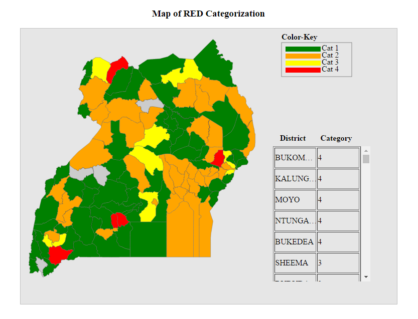
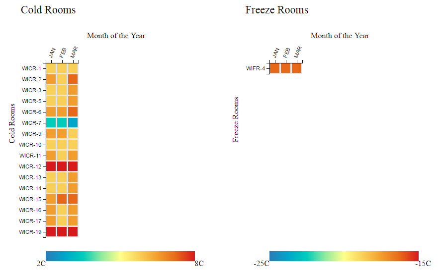

Matthew Kuch
I'm a management consultant passionate about storytelling through visuals. I've worked in various sectors including, but not limited to; Public Health, Supply Chain Management, Health Financing, Portfolio Financial Management etc... I create engaging and impactful data stories and graphics to simplify complex data.
Email: kuch.matthew@gmail.com | X (Formerly Twitter): @matthewkuch
Recent Work

Previous Work / Archives

UCE Performance Bumpchart
An interactive visualization of UCE performance.
2/14/2017

UCE Failure Rate Profile by District
A visual analysis of UCE failure rate.
3/10/2017

Kampala District Population Distribution by Parish
A map of all Parishes in Kampala district.
5/25/2017

Serious Crime Cases in Uganda over a 10 year period
Visualizing crime over time
5/25/2017
Map of RED Categorisation, Uganda
A categorical analysis of Ugandan districts based on immunization coverage rates
6/25/2017
Cold Room Temperature Monitoring
A heatmap of coldrooms at NMS
6/30/2017